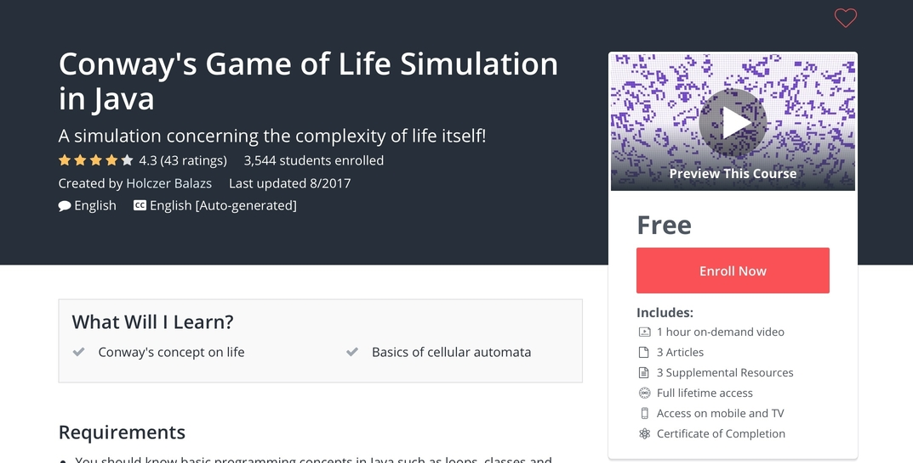

Rebecca Lewis
Home
Projects
Resume
Gestation Lengths
Caffeine Vs Memory Experiment
Animated Films Project
Movie Picking Project

Game of Life Project
MN County Prisons
×
1 / 6
2 / 6
3/ 6
4/6
5/6
6/6
❮
❯


![Animated Films Project: Our group tried to figure out by using linear regression a formula for predicting how much money an animated film made. Through backwards regression, we found that the number of audience ratings, the number of critic ratings, the actual audience rating, the year of production, the estimated budget, and the art style of the film explained the most variability of the square root of the gross revenue for the film when fitted into a linear model. This model explains 61.57% of the variability in square root of the gross revenue. By making predictions on known films, we saw that the model makes fairly accurate predictions for the most part. We did not have enough evidence to suggest that Disney explained more of the variability in the model than the other variable which are included in our current model. This surprised us based on the boxplots at the beginning showing that Disney films average more gross revenue. We were somewhat surprised to find that people’s opinions of the film have a significant effect on how much the film grosses. Three of our six significant predictor had to do with ratings, showing that word of mouth and opinions of others have a large impact on whether people pay money to see films (therefore impacting the gross revenue).Through this descriptive regression analysis, we found that we can fairly accurately predict the gross revenue for films that gross more than 8 million USD, based on the 6 predictors we found to be significant.](ani2x.jpg)
![Movie Picking Project: Our group focused on Movies and the dataset given by the wonderful people at Movielens. We used their ml-100k zip file, so that we could do the opposite of their work. We instead of focusing on finding the best movies for people we focused on finding the worst movies for people. This could either be used for avoiding these movies or for forcing those people that you dislike to watch movies that are horrible for them. We did this by using 3 different systems: Memory based reasoning, Linear Regression, and Neuro Networks, to find out movies that would be horrible for a person that rates 10 movies. Then if a movie was found on more than one of these systems, we would suggest this movie to be an awful pick for the person.](popcorn2x.jpg)